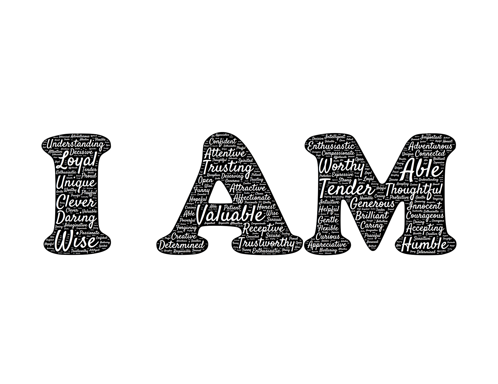

D o'clock
Brainstorming
Lecture
Group
Study
Help
About us
Lecture
D o'clock
에서 추천하는 '꿈, 미래, 인생, 그리고 나 자신' 에 대한 강연

브레인 스토밍(Brainstorming)과 더불어, 나 자신을 더 이해하고 새로운 시작을 할 수 있는 발판이 되어줄 지혜를 얻을 준비가 되셨나요?
나와 다른 다양한 길을 걸어온 사람들이 전해주는 '지혜'는, 나에게 생각보다 큰 도움을 줄 수 있습니다.
비록 배경과 직업, 성격, 겪어온 경험 등이 다를지언정,
'내 인생을 살고싶다'
라는 생각으로 시작한 근본적인 사고는 똑같기 때문이죠.